Infância e Juventude

Primeiros Anos
Filho do empresário Milton Guirado Theodoro da Silva e de Neyde Joanna Senna da Silva, Ayrton Senna nasceu em 21 de março de 1960, na Maternidade de São Paulo, no bairro de Cerqueira César, São Paulo. A mãe de Senna era neta de imigrantes italianos e o seu pai era filho de uma espanhola (de Tíjola, em Almeria) com um paulista. Morou no Jardim São Paulo dos quatro aos doze anos, mudando-se posteriormente para o Tremembé. Desde novo ele se interessava por automóveis.
Foi incentivado pelo pai, um entusiasta das competições automobilísticas, que montou o primeiro kart de Senna quando este tinha quatro anos, e que tinha um motor de máquina de cortar grama. Aos nove anos, já conduzia jipes pelas estradas dentro das propriedades rurais de Milton. Na televisão, gostava de assistir o anime Speed Racer, sobre um piloto de corridas.

Início no Kart
Começou a competir oficialmente nas provas de kart aos treze anos. A sua primeira vitória oficial aconteceu na primeira prova oficial no kart de que participou, em julho de 1973. Tal fato teve lugar no Kartódromo de Interlagos, que hoje leva seu nome. Em 1977 ganhou o seu primeiro "Campeonato Sul-Americano de Kart", repetindo o feito em 1980. Foi campeão brasileiro de kart em 1978, 1979 e 1980. Foi campeão paulista em duas ocasiões, em 1974 (na categoria júnior) e 1976. Foi duas vezes vice-campeão mundial de kart, em 1979 - empatou com o campeão nos pontos, mas perdeu no desempate - e 1980.
A conquista do seu primeiro título de campeão brasileiro de kart ocorreu em 16 de julho de 1978 no Kartódromo de Tarumã, em Viamão, na Grande Porto Alegre. Ayrton, com 18 anos na época, competiu pela equipe "Sulam" e venceu todas as provas, derrotando assim o seu maior rival Walter Travaglini. A competição teve mais de 150 pilotos inscritos e contou com cinco categorias diferentes. Ayrton competiu na categoria de "100 cc" em três baterias, todas realizadas no domingo em um total de 21 voltas. Ainda em 1978, Ayrton conseguiu um recorde dentro do kartismo, quatro vitórias em um mesmo dia. O feito aconteceu em Uberlândia na inauguração do kartódromo da cidade. Foram duas vitórias pela categoria 100 cilindradas e outras duas pela 125 cc. Das quatro vitórias, a que mais chamou a atenção foi a da segunda bateria, na qual ele largou em 18º e venceu com apenas nove voltas. Senna também quebrou o recorde da pista até então com a marca de 1 minuto 8 segundos e 36 centésimos no traçado de 1200 metros.
No mundial de kart realizado em 1979 em Estoril, Ayrton usou pela primeira vez o capacete amarelo que se tornou sua marca registrada nas pistas. A pintura foi feita por Sid Mosca. No entanto, como cada país tinha sua própria pintura, todos os competidores do Brasil usaram o mesmo layout, conforme exigia o regulamento da competição. Senna terminou empatado com o holandês Peter Koene em primeiro lugar. Segundo a equipe brasileira, em caso de igualdade de pontos, seria levado em consideração o confronto direto na última das três finais, prova que Ayrton venceu com boa margem em relação aos concorrentes. A organização do Mundial, por outro lado, teve uma interpretação diferente do regulamento: o título seria de Koene graças ao resultado das semifinais, onde ele havia terminado em quarto lugar, enquanto Senna foi o oitavo. Na prova, o brasileiro era o segundo colocado até perto das voltas finais, quando o líder teve um problema com o kart na frente de Ayrton, que não teve tempo de desviar da colisão e ambos rodaram. Ao retornar ao Brasil, o brasileiro conversou com Sid Mosca para que fizesse daquela pintura sua marca própria dentro das pistas.
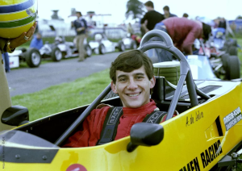Em 1981, começou a competir na Europa, ganhando o campeonato inglês de Fórmula Ford 1600 (12 vitórias em 20 corridas), pela equipe de Ralf Firman. Ao final da temporada, Ayrton encontrava-se em um dilema: apesar do sucesso na temporada, não conseguiu novos patrocinadores, razão pela qual não conseguiria se sustentar na Europa. Sua família não o apoiava integralmente, com receio dos perigos das pistas de corrida. Por tudo isso, decidiu abandonar o automobilismo e administrar uma loja de material de construção montada pelo pai no bairro Parque Novo Mundo, na Zona Norte da capital paulista. Porém, em fevereiro de 1982, decidiu voltar à Europa e continuar sua carreira.
Em 1982, foi campeão europeu e britânico de Fórmula Ford 2000 (22 vitórias em 27 corridas), pela equipe de Dennis Rushen. Deste campeonato, destaca-se a histórica vitória no Circuito de Snetterton (Inglaterra), quando Ayrton correu a prova inteira com problemas nos freios dianteiros.
Nessa época adotou o nome de solteira da mãe, Senna, pois Silva é um nome bastante comum no Brasil. No mesmo ano, no dia 30 de maio, o brasileiro participou de uma "corrida das celebridades" denominada "Shell Super Sunbeam for Celebrities", realizada no circuito de Oulton Park, Inglaterra. Senna venceu e fez a melhor volta a bordo de um TalbotSunbeam T1. Já em 13 novembro, fez sua estreia na Fórmula 3 Britânica em Thruxton, venceu, fez a pole position e a volta mais rápida, com um "Ralt Toyota RT3". No início de outubro de 1982, mesmo com a pouca visibilidade que a categoria possuía, Senna já era um nome de destaque do esporte brasileiro, refletindo na sua chegada ao Brasil depois da conquista do título da Formula Ford, que contou com a presença maciça de jornalistas e até mesmo de admiradores. Em dezembro de 1982 Ayrton foi convidado para participar de uma corrida especial de encerramento da temporada da recém-criada categoria de superkart. Mesmo sem nunca ter pilotado aquele novo tipo de kart, Ayrton fez a pole marcando 46 segundos e 43 centésimos, batendo o recorde do Kartódromo de Interlagos até então. Os outros pilotos - 41 no total - ficaram um segundo ou mais atrás de Senna. Na primeira bateria, o tricampeão se envolveu em um acidente na largada com outros 20 karts, caindo para a 11º posição. Porém, fez uma prova de recuperação e conseguiu terminar em terceiro. Na segunda bateria, Senna assumiu a ponta na primeira volta e manteve o primeiro lugar até o final. Na bateria final, que contou com 30 karts, Senna largou em quarto e também conseguiu a liderança logo no início. Dali em diante ele manteve a ponta e venceu com 15 segundos de vantagem para o segundo colocado.
Em 1983, Senna venceu o campeonato inglês de Fórmula 3 Inglesa (treze vitórias em 21 corridas, sendo 9 delas consecutivas), pela equipe de Dick Bennetts, depois de uma disputa com o inglês Martin Brundle, que corria pela equipe de Eddie Jordan. O campeonato inglês de Fórmula 3 Inglesa dessa temporada gerou uma controvérsia envolvendo o piloto inglês, que acabou por ficar com o vice-campeonato. Ele foi acusado por todos os pilotos de ter utilizado um carro fora das especificações do regulamento, conseguindo assim se aproximar de Ayrton na segunda metade do campeonato. O recurso impetrado pelos pilotos foi julgado em novembro de 1983 pelo tribunal do 'Royal Automobile Club' e o inglês foi condenado por unanimidade. A referida condenação refere-se a uma corrida, a única em que a equipe foi apanhada, quando o carro tinha uma abertura maior na admissão do motor e menor altura das "minissaias", proporcionando ao piloto fazer menores tempos nos treinos e corridas.
Por conta dessa inferioridade em relação ao carro do piloto inglês, Ayrton usou uma tática curiosa no GP de Thruxton, no qual venceu de ponta a ponta. A equipe colocou uma fita adesiva para fechar a saída de ar do radiador do óleo, assim o óleo atingiria a temperatura ideal com mais rapidez. Com a temperatura da água aumentando, Senna precisou afrouxar o cinto e retirar o adesivo com a mão após algumas voltas em uma manobra bastante arriscada, mas que valeu o título ao final da prova.
A conquista da Fórmula 3 lhe valeu o cumprimento do então presidente João Figueiredo através de um telegrama. Neste último campeonato, após várias vitórias em Silverstone, a imprensa inglesa especializada chegou a chamar o circuito de Silvastone, em homenagem a Ayrton. Também em 1983 triunfou no prestigioso Grande Prêmio de Macau pela Teddy Yip's Theodore Racing Team, diretamente relacionado à equipe que o conduziu à F3 britânica.
Ainda em 1983 realizou seus primeiros testes com um carro de Fórmula 1. Primeiro com a Williams, o piloto bateu o recorde da pista de Donington Park até então. Em poucas voltas, Senna já tinha igualado o tempo de Jonathan Palmer, piloto de testes da Williams, em 1 minuto 1 segundo e 7 centésimos. Nas 83 voltas que deu, atingiu o recorde de 1 minuto 0 segundos e 5 centésimos. Também realizou testes para a McLaren, onde Senna impressionou o chefe da equipe Ron Dennis. Mesmo com a concorrência de outros dois pilotos convidados para os testes, o inglês Martin Brundle e o alemão Stefan Bellof, Senna foi o mais rápido dos três em Silverstone. A outra equipe pela qual Senna treinou foi a Toleman, treinos estes realizados em Silverstone, Senna foi mais rápido que o titular da equipe, o inglês Derek Warwick, tanto com pista seca como com pista molhada. Em sua melhor passagem, o brasileiro registrou 1 minuto 11 segundos e 5 centésimos, tempo que daria o quinto lugar numa corrida. No final de 1983, mesmo antes de sua estreia na F1, Ayrton já gozava de grande prestígio, como pode ser conferido no especial denominado: Ayrton Senna Especial - Do Kart à Fórmula 1, que a Rede Globo produziu em outubro do referido ano, contando sua trajetória no automobilismo até então.
Carreira na Fórmula 1
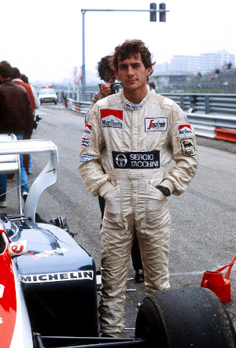1984: Toleman
Senna atraiu a atenção de diversas equipes de Fórmula 1 como Williams, McLaren, Brabham e Toleman. Ao contrário do que se imagina, seu compatriota Nelson Piquet não se opôs à sua contratação pela Brabham. A patrocinadora da equipe, a Parmalat, tinha mais interesse em ter um piloto italiano na equipe do que ter dois brasileiros, influenciando na decisão da equipe em contratar o piloto italiano Teo Fabi para a temporada. Senna, imaginando que Piquet tinha mais influência na equipe, ficou ressentido, declarando em uma entrevista que "Ele (Piquet) não ajudou e nem atrapalhou", dando a entender que sua ida à Brabham foi vetada pelo então bicampeão mundial. Assim, das três remanescentes, apenas a equipe Toleman ofereceu a ele um carro para disputar o campeonato do ano de 1984.
Senna marcou seu primeiro ponto no campeonato mundial de pilotos logo no segundo grande prêmio que disputou, em Kyalami na África do Sul. Ele repetiu o resultado duas semanas depois, no Grande Prêmio da Bélgica, disputado no circuito de Zolder. Uma semana depois, o piloto brasileiro não conseguiu tempo para o Grande Prêmio de San Marino, em Imola. Tal fato aconteceu devido a um desentendimento entre a equipe Toleman e a fábrica italiana de pneus Pirelli, Ayrton e seu companheiro de equipe, Johnny Cecotto, não puderam participar dos treinos de sexta-feira. No sábado, sob chuva intensa, Ayrton Senna foi o piloto mais rápido na pista molhada, mas longe das marcas obtidas pelos seus adversários no dia anterior na pista seca. Depois, porém, com a pista seca, com muitos problemas no motor turbo Hart de seu Toleman, Senna se viu impedido de fazer um bom tempo.
Uma semana antes do GP de Mônaco, ele participou do evento promocional Corrida dos Campeões de Nürburgring, ao lado de ex-campeões da F-1, como Sir Stirling Moss, Jack Brabham, John Surtees, Phil Hill, Niki Lauda e o futuro campeão Alain Prost. Todos correram com o mesmo carro de rua - um Mercedes 190 E 2,3 - 16 - e Senna chegou em primeiro, logo à frente de Niki Lauda.
No GP de Mônaco, seu desempenho trouxe-lhe todas as atenções das demais equipes. Classificou-se em 13º no grid de largada, e fez um rápido progresso através das estreitas ruas de Monte Carlo. Na volta 19, passou Niki Lauda, que estava em segundo, e começou a ameaçar o líder Alain Prost, e continuou por várias voltas lutando pelo primeiro lugar com seu limitado Toleman. A esta altura já chovia muito no circuito e a corrida foi interrompida na volta 31 por razões de segurança. Senna chegou a comemorar a vitória ultrapassando Alain Prost a poucos metros da linha de chegada, mas, nesses casos, o regulamento mandava considerar as colocações da volta anterior e, ainda, por ter sido interrompida com menos da metade da corrida, os pontos deveriam ser computados pela metade. Senna ainda ganharia dois pódios naquele ano - terceiro no Grande Prêmio da Grã-Bretanha, em Brands Hatch, e no GP de Portugal, em Estoril. Isso o deixou empatado com Nigel Mansell com treze pontos, apesar de ter perdido o GP da Itália quando a Toleman o suspendeu de correr por quebra de contrato, depois de ele ter assinado com a Lotus para a temporada seguinte. Suas atuações fizeram-no a revelação da temporada, segundo revistas especializadas.
Ainda em 1984, Senna tomou parte nos 1000 km de Nürburgring, onde pilotou o Porsche 956, correndo em parceria com Henri Pescarolo e Stefan Johansson. Apesar de ser sua estreia nesse tipo de competição, Ayrton Senna conseguiu fazer a melhor volta em três oportunidades durante a corrida, tanto em pista seca como em condições de chuva, além de marcar o sétimo melhor tempo, embaixo de chuva. Somados os tempos dos três pilotos, a equipe largou em nono lugar. No final, a equipe de Ayrton terminou em oitavo lugar sendo prejudicada por um problema que obrigou o carro a ficar parado durante 17 minutos, aproximadamente oito voltas. A equipe acreditava na época que sem o referido problema, o carro chegaria em terceiro lugar. Esta corrida, juntamente com a Corrida dos Campeões de Nürburgring, foram as únicas que Senna realizou correndo em carros com cockpit fechado.
Em novembro de 1984, Ayrton sofreu uma paralisia facial, que a princípio se pensou ser um derrame. Na verdade era uma paralisia facial periférica, resultado de uma mastoidite, inflamação do nervo mastoide, responsável pelos comandos do cérebro à musculatura facial. No princípio, Senna tratou a doença com altas doses de cortisona, porém, com medo de efeitos colaterais, experimentou um tratamento alternativo com o médico Haruo Nishimura. No entanto, o tratamento não surtiu efeito, tendo assim que voltar ao tratamento convencional. O problema foi resolvido quando o preparador físico Nuno Cobra começou a tratar do piloto.
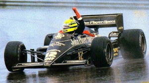
1985-1987: Lotus
Na Lotus, em 1985, ele tinha como parceiro o italiano Elio De Angelis. Senna largou em quarto na sua primeira corrida pela nova equipe na abertura da temporada no Brasil, no circuito de Jacarepaguá, no Rio de Janeiro, mas abandonou a prova devido a problemas elétricos. Na segunda corrida do ano, o GP de Portugal, disputado no Autódromo do Estoril, em 21 de abril de 1985, conseguiu sua primeira vitória na Fórmula 1, largando na pole position sob pesada chuva. Alain Prost, em segundo, abandonou depois de bater no muro. Ayrton Senna conseguiu sua segunda vitória, também sob chuva, no GP da Bélgica, no circuito de Spa-Francorchamps. Graças ao seu excelente desempenho nos treinos e ao motor Renault, Senna passaria a ser o "rei das pole positions". Encerraria o ano com uma corrida marcante no GP da Austrália, quando repetiu um feito de seu ídolo Gilles Villeneuve e pilotou um bom tempo sem o bico do carro, saindo várias vezes da pista mas mantendo a segunda posição. O carro mais uma vez não aguentou o esforço e Senna abandonou a corrida. Senna terminou a temporada em 4º lugar no Campeonato Mundial de Pilotos com 38 pontos e seis pódios (duas vitórias, dois segundos e dois terceiros lugares), além de sete pole positions. Devido ao seu desempemho, foi eleito o mais popular e o melhor piloto da temporada segundo a revista Autosprint.
Em 1986, a Lotus escolheu o escocês Johnny Dumfries como parceiro, com o aval de Senna, que vetou o inglês Derek Warwick sob a alegação de que a Lotus não tinha condições de manter carros competitivos para dois pilotos de ponta ao mesmo tempo. A nova Lotus 98T mostrou ser mais confiável em 1986 e a temporada começou bem para Senna, que terminou em segundo na corrida vencida pelo também brasileiro Nelson Piquet, no GP do Brasil em Jacarepaguá. Reconhecendo estar com um carro inferior aos da Williams e McLaren, Senna passou a adotar uma estratégia de não parar para trocar pneus, buscando ficar na frente dos adversários o maior tempo possível. Com essa tática, ele passou a liderar o campeonato pela primeira vez na carreira, depois de vencer o GP da Espanha, em Jerez de la Frontera, no qual bateu a Williams de Nigel Mansell por 0,014s - uma das menores diferenças de chegada da história da F1.
Todavia, a liderança do campeonato não foi mantida por muito tempo, já que Senna abandonou diversas outras corridas por problemas mecânicos. A caça ao primeiro título mundial acabou sendo uma luta entre Prost e sua McLaren-TAG e a dupla Piquet e Mansell da Williams-Honda. Na Hungria, um circuito ainda mais travado (onde as ultrapassagens são mais difíceis), repetiu uma vez mais a estratégia, mas foi ultrapassado por Nelson Piquet. Ainda nesse ano, Senna se tornaria definitivamente um ídolo no Brasil ao conquistar sua segunda vitória na temporada no GP dos Estados Unidos, disputado em Detroit, e terminou o campeonato novamente na quarta colocação, com 55 pontos, oito poles e seis pódios.
Ainda em 1986, a convite da revista britânica Cars and Car Conversions, Senna fez testes em carros de rally (ele dirigiu um Vauxhall Nova 1.3, um Golf GTi do Grupo A, um Ford Sierra Cosworth RS, um Ford Escort V6 3.4 de tração integral e um Austin Metro 6R4 do Grupo B - com o mesmo V6 que acabou no Jaguar XJ220), porém com apenas 250 cv. A matéria rendeu oito páginas. Mais tarde, esta edição tornar-se-ia artigo de colecionador e um dos raríssimos exemplares chegou a custar £ 100 no eBay.uk. Os testes foram realizados no País de Gales e o trajeto escolhido tinha 2,4 km e fazia parte de uma região de florestas, usado em etapas especiais de ralis britânicos. Os testes também serviram de tema da capa da revista italiana Autosprint, sob o título de "Senna Rallista!"
O ano de 1987 veio com muitas promessas de dias melhores. A Lotus tinha um novo patrocinador, o Camel, e o mesmo poder dos motores Honda das Williams depois que a Renault decidira se retirar do esporte. Depois de um começo lento, Senna ganhou duas corridas em seguida: o prestigioso GP de Mônaco (a primeira do recorde de seis vitórias no principado) e o GP dos Estados Unidos em Detroit (nesse sem trocar os pneus, sendo o único piloto da zona de pontuação que não fez pit stops), também pelo segundo ano seguido, e mais uma vez chegou à liderança do campeonato. Nesse momento, a Lotus 99T Honda parecia ser mais ou menos igual aos ótimos Williams-Honda, mais uma vez pilotados por Piquet e Mansell. Mas, apesar da performance do 99T, que usava a tecnologia da suspensão ativa, as Williams FW11B de Nelson Piquet e Nigel Mansell eram ainda carros a serem batidos. A diferença entre as duas equipes nunca foi tão evidente quanto no GP da Grã-Bretanha, em Silverstone, onde Mansell e Piquet voaram sobre as Lotus de Senna e seu parceiro Satoru Nakajima. Depois de rodar na pista devido a uma falha na embreagem a três voltas do final no GP do México, Senna ficou fora da luta pelo campeonato, deixando Piquet e Mansell brigando por ele nas últimas duas corridas.
Mansell feriu-se nas costas em um grave acidente durante os treinos para o GP do Japão de 1987, em Suzuka, deixando o campeonato nas mãos de Piquet. Entretanto, isso significava que Senna poderia terminar a temporada em segundo lugar se ele terminasse a corrida entre os três primeiros nas duas corridas que faltavam - Japão e Austrália. Ele terminou as duas em segundo, mas as medições feitas no carro depois do GP da Austrália constataram que os dutos dos freios eram mais largos do que o permitido pelo regulamento e Senna foi desclassificado, dando à Lotus a sua última temporada bem-sucedida. Ele acabou classificado em terceiro na colocação final, com 57 pontos, uma pole e oito pódios (duas vitórias, quatro segundos e dois terceiros). Essa temporada marcou uma reviravolta na carreira de Senna depois de ele ter construído uma profunda relação com a Honda, que lhe rendeu grandes dividendos. Ayrton foi contratado pela McLaren, que acertou com a Honda o fornecimento de motores V6 Turbo para 1988.
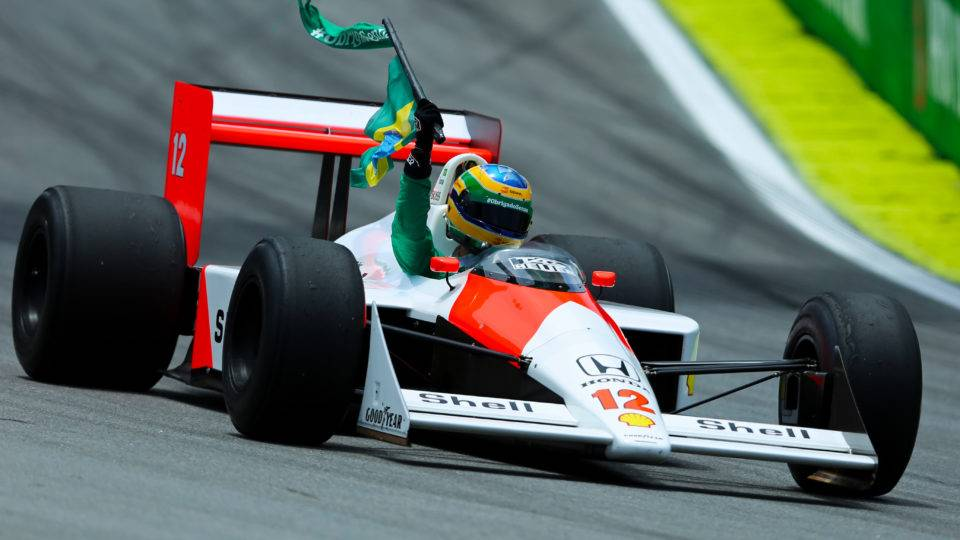
1988-1993: McLaren
Em 1988, as McLaren-Honda ostentavam os números 11 e 12, desta vez com a dupla Alain Prost e Ayrton Senna. Um dos principais momentos da temporada de 1988 aconteceu em Mônaco. Durante os treinos oficiais, Ayrton fez a pole position com uma vantagem de 1:427 para Alain Prost. Nos treinos, segundo o brasileiro, ele estava guiando em outra dimensão e, de certa forma, não tinha uma total consciência do que estava acontecendo. Na corrida, Ayrton liderava com uma margem de quase 1 minuto para o segundo colocado, o francês Alain Prost. No entanto, o tricampeão mundial acabou batendo na 66ª volta, dando a vitória ao adversário francês.
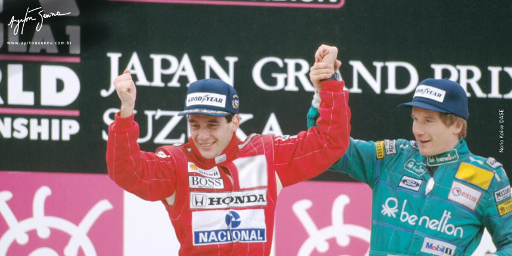No GP do Japão, Senna, que largava na pole, não conseguiu largar e caiu para 17ª posição. Entretanto, já nas primeiras voltas, Ayrton ultrapassou oito adversários. Na 28º volta, Senna ultrapassou Prost e terminou ao final da prova com 13 segundos de vantagem para o francês, conquistando o título.
Logo após o primeiro título mundial, Senna participou do especial de Roberto Carlos na TV Globo afirmando que, nas últimas voltas do GP do Japão, o qual lhe garantiu o título com uma vitória, ele teve uma visão do que ele achava ser Deus. Senna pilotou a McLaren MP4/5 em 1989. Nesse ano, a rivalidade entre ele e Alain Prost se intensificou, notadamente a partir do GP do Japão, mantendo-se entre as temporadas de 1990 e 1991.
No GP de Mônaco de 1989, Ayrton novamente abriu uma vantagem sobre o francês acima de 50 segundos, alcançando a vitória desta vez. Senna disse, logo após a prova, que seu carro tinha perdido as duas primeiras marchas e, por conta disso, precisou mudar sua forma de pilotagem. Algo parecido aconteceria no GP Brasil de 1991.
Prost conquistou o tricampeonato em 1989, depois de uma colisão com Senna durante o GP do Japão, em Suzuka, penúltima corrida da temporada, e que Senna precisava vencer para ter chances de conquistar o campeonato mundial na última etapa. Senna tentou ultrapassar Prost na chicane, os dois "tocaram" os pneus e foram para fora da pista com os carros entrelaçados, Senna retornou à pista auxiliado pelos fiscais, que empurraram seu carro pois o motor havia apagado e ele foi direto aos boxes para reparar o bico do carro danificado na manobra. Voltando à pista, tirou a liderança de Alessandro Nannini, da Benetton, e chegou em primeiro, sendo desclassificado pela FIA por cortar a chicane depois da colisão com Prost. A penalização e a suspensão temporária de sua superlicença - que é a habilitação de um indivíduo para pilotar carros de F1 - fez com que Senna travasse uma batalha de palavras com a FIA e seu presidente Jean-Marie Balestre. Anos mais tarde, em 1996, já fora da presidência da FIA, Balestre admitiu que beneficiara o compatriota naquele final de campeonato.
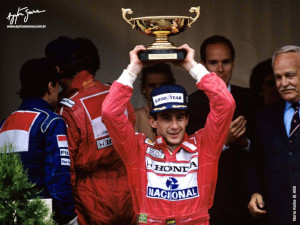Em 1990, no mesmo circuito e com os dois pilotos novamente disputando o título mundial, Senna tirou a pole de Prost. A Ferrari de Prost fez uma largada melhor e pulou à frente da McLaren de Senna, que antes mesmo da largada havia declarado que não permitiria uma ultrapassagem de Prost. Na primeira curva, Senna tocou a roda traseira de sua McLaren na Ferrari de Alain Prost a 270 km/h, levando os dois carros para fora da pista. Ao contrário do ano anterior, desta vez o abandono dos pilotos deu a Senna o seu segundo título mundial. Neste ano, Senna conquistou o título mesmo com um equipamento inferior ao da Ferrari, notadamente a partir do meio da temporada.
A temporada de 1990 reservou um momento inusitado na história da Fórmula 1. Em setembro daquele ano, durante o GP de Monza, na Itália, Senna fez uma aposta com o chefe de equipe Ron Dennis. O chefe da McLaren não acreditava na vitória de Ayrton dentro da casa da Ferrari. O brasileiro decidiu propor uma aposta com Ron: caso conseguisse a vitória, ele ganharia o carro do triunfo de presente. Além de ter vencido a corrida, Senna fez a pole position, marcou a volta mais rápida da prova e liderou de ponta a ponta, sem dar chances para a Ferrari de Alain Prost, seu rival na disputa pelo título daquela temporada, que terminou na segunda colocação. A McLaren foi recebida pela família do piloto e hoje faz parte do acervo do Instituto Ayrton Senna.
O GP Brasil de 1991 marcou a primeira vitória de Ayrton Senna em sua terra natal pilotando um carro de Fórmula 1. Aliado a isso, o fato de a corrida ter possuído um final dramático, com a perda de quase todas as marchas de sua McLaren e o consequente desgaste físico acima do normal, fazendo com que ele não conseguisse sair do carro sozinho, fez dessa corrida uma das mais lembradas da carreira do piloto brasileiro.
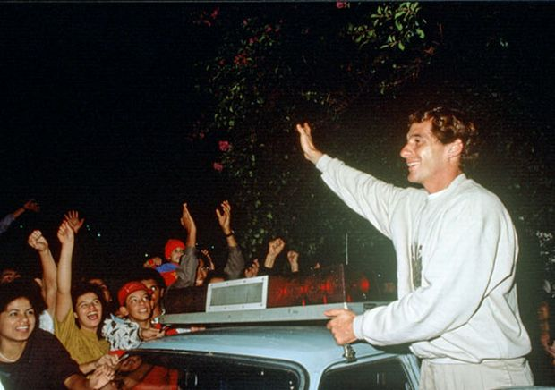Logo após a bandeirada final, a comunicação de rádio da equipe foi aberta na TV, no exato momento em que Ayrton gritava, em parte pela vitória inédita como também pelas dores que sentia devido ao desgaste da corrida. Ainda na pista, em seguida à conquista inédita de Senna, os fiscais de pista comemoravam a vitória do brasileiro com pulos e abraços. Mais tarde, Ayrton retornou a sua mansão na Zona Norte da cidade de São Paulo escoltado por policiais, devido à presença maciça de público em frente a sua residência. Em seguida, já em cima do muro que cerca a mansão, Senna acenou para o público presente.
No dia seguinte à conquista em Interlagos, Senna concedeu uma entrevista coletiva no Aeroporto Campo de Marte, no bairro de Santana, Zona Norte de São Paulo. Além da grande presença de integrantes da imprensa e de público, o que chamou a atenção foi a história de Francisco Lins Silva, o "Chiquinho", então com doze anos, que caminhou cerca de cinco quilômetros da Freguesia do Ó até o Campo de Marte para conhecer o tricampeão mundial. Por volta de quatro meses depois, Chiquinho acabou por conhecer a mansão de Ayrton, além de visitar o quarto do seu ídolo.
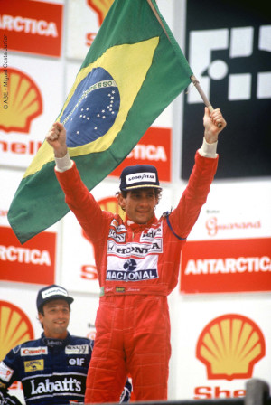Em 1991, depois de conquistar seu terceiro título mundial, mesmo com um equipamento inferior em relação à Williams, Senna explicou à imprensa o que acontecera no ano anterior em Suzuka. Ele tinha como prioridade conseguir a pole pois havia recebido informações seguras de que esta mudaria de lado, passando para a esquerda, o lado limpo da pista, somente para descobrir que essa decisão havia sido revertida por Balestre depois que ele conquistara a pole. Ao explicar a colisão com Alain Prost, Ayrton Senna disse que queria deixar claro que ele nunca iria aceitar as decisões injustas de Balestre, incluindo a sua desclassificação em 1989 e a pole de 1990.
Logo após a conquista do tricampeonato mundial de Fórmula 1 em 1991, Senna foi recebido com honras militares e de estadista na sua chegada na capital paulista. Primeiro, o avião no qual ele aportou em São Paulo foi acompanhado, no trecho final da viagem, por caças da Força Aérea Brasileira. Logo após, recebeu da então prefeita Luiza Erundina, a chave da cidade. Em seguida, desfilou em carro aberto pelas ruas da cidade. A princípio, a carreata seria feita em um caminhão do Corpo de Bombeiros, porém, com a negativa do próprio Ayrton, ele terminou desfilando em um carro conversível particular. A enorme quantidade de pessoas e automóveis aglomerados acabou por prejudicar o trânsito da cidade, além de ocasionar um acidente envolvendo cinco carros.
Ainda em 1991, no Autódromo do Estoril, em Portugal, Ayrton participou de um desafio inusitado. Ele, com seu McLaren MP4/6, além de Gareth Rees, piloto que conquistaria o título da Fórmula 2 britânica em 1996, com um Honda Concerto, e Allan McNish, futuro tricampeão das 24 Horas de Le Mans, em 1998, 2008 e 2013, com um Porsche 911 Turbo, disputaram uma volta no autódromo português para constatar quão rápido era um carro de Fórmula 1. O primeiro a largar foi o Honda, 19,5 segundos depois foi a vez do Porsche e, 1 minuto e 15 segundos após o Honda e 55,5 segundos após o Porsche, foi a vez da McLaren. Ao final da volta, Ayrton chegou à frente no desafio, com um tempo total de disputa de 2 minutos e 28 segundos, sendo que 1 minuto e 13 segundos foi o tempo marcado por Ayrton para completar a volta no circuito.
Em 1992, Senna chegou até a cogitar correr na Fórmula Indy. O primeiro incidente aconteceu durante treino no GP da Bélgica. Naquele treino, o piloto francês Erik Comas bateu violentamente contra o muro e ficou desacordado, com seu carro parado no meio da pista. Ao passar pelo local segundos após o acidente, Senna parou sua McLaren e correu em direção à Ligier/Renault, que vazava combustível e estava prestes a explodir. Percebendo que Comas estava desacordado no cockpit, Senna desligou a ignição do carro do companheiro e evitou o risco de um incêndio.
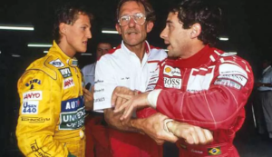
Briga com Michael Schumacher
Já o segundo acontecimento foi o abalroamento que o piloto brasileiro teve com o então jovem Michael Schumacher, na oitava etapa, do GP da França em Magny-Cours. Após a largada, ocupando a 4ª posição, Senna ia contornar a curva Adelaide, quando de repente foi atingido por trás pelo Benetton número 19; sem condições de sair do local, Senna abandonou a corrida prematuramente. Antes de começar a segunda largada, o brasileiro foi até Schumacher e disse: "Você fez uma cagada do tamanho de um bonde e me jogou para fora da pista". O piloto alemão não respondeu e Senna deixou o local.
No final de 1992, Senna participou de testes pela equipe Penske da Fórmula Indy em Arizona, no autódromo Firebird International Raceway. Pilotando um Penske PC-21, os testes contaram com a participação de Emerson Fittipaldi, piloto da Penske na época. Em tempos extra-oficiais, Fittipaldi cravou a melhor de suas passagens em 49s70, enquanto Senna virou mais rápido: 49s09.
Senna demorou muito a decidir o que fazer em 1993 e chegou ao final do ano sem ser contratado por nenhuma equipe. Ele sentiu que os carros da McLaren não seriam competitivos, especialmente depois que a Honda resolveu se retirar da F1 no final de 1992, e não poderia ir para a Williams enquanto Prost estivesse por lá, pois o contrato dele proibia a equipe de ter Senna como seu parceiro. Ron Dennis, chefe da McLaren, estava tentando assegurar um fornecimento de motores Renault V10 para 1993. Com a recusa da Renault, a McLaren foi obrigada a pegar os motores Ford V8 como um cliente comum. Dessa forma, a McLaren recebeu versões de motores mais velhas do que os clientes preferenciais da Ford, como a Benetton, e tentou compensar essa deficiência de potência com mais tecnologia e sofisticação, inclusive um sistema efetivo de suspensão ativa. Dennis finalmente persuadiu Senna a voltar para a McLaren, mas o brasileiro concordou somente em assinar para a primeira corrida da temporada, na África do Sul, onde ele iria verificar se os carros da McLaren eram competitivos o bastante para lhe proporcionar uma boa temporada. Senna concluiu que esse novo carro tinha um surpreendente potencial, mas ainda estava abaixo da potência, e não seria páreo para a Williams-Renault de Prost. Senna decidiu não assinar por uma temporada e sim por cada corrida a ser disputada. Eventualmente ele poderia permanecer por um ano, apesar de algumas fontes afirmarem que isso foi mais um jogo de marketing entre Dennis e Senna.
Depois de terminar em segundo lugar na corrida de abertura da temporada na África do Sul, Senna ganhou os GPs do Brasil e da Europa, em Donington Park, na chuva. Esta última é frequentemente lembrada como "a corrida da volta perfeita" e como sendo uma de suas maiores vitórias na F1. Ele largou em quarto e caiu para quinto na primeira curva, mas já estava liderando antes de a primeira volta ser completada. Alguns pilotos precisaram de sete pit stops para trocar os pneus de chuva/lisos, dependendo das mudanças climáticas ao longo da corrida.
Sobre esta corrida, Galvão Bueno fez o seguinte depoimento:
Não tive dúvida nenhuma de que estava vendo algo histórico, porque tive uma corrida inteira para raciocinar sobre isso. Só Ayrton Senna seria capaz de uma primeira volta, a mais fantástica que um piloto fez na história, e de uma vitória assim naquela circunstância. Eu disse ao engenheiro dele no fim da corrida "definitivamente, desse planeta ele não é". E o cara falou: "disso eu nunca tive dúvida!"
— Galvão Bueno
Outra curiosidade sobre esta corrida é que ele cravou a volta mais rápida da prova passando por dentro do box (à época não tinha limite de velocidade passar pelos boxes), sendo primeira e única vez na história da Formula 1 que isso aconteceu.
"Eu sabia que por ali era mais rápido, eu fiz para experimentar. Quando me informaram que era a melhor volta da corrida, eu falei ‘OK, se o Prost passar à minha frente, eu vou passar ele por dentro do box’. Só isso!"
— Ayrton Senna
Depois do histórico GP da Europa de 93, Senna foi 2º na Espanha e quebrou o recorde de seis vitórias em Mônaco, o que lhe fez jus ao antigo apelido de Graham Hill: "Mister Mônaco". Depois de Mônaco, a sexta corrida da temporada, Senna liderou o campeonato à frente da Williams-Renault de Alain Prost e da Benetton de Michael Schumacher, apesar da inferioridade do equipamento da McLaren em relação às duas equipes. A cada corrida, as Williams de Prost e Damon Hill mostravam a superioridade, com Prost caminhando para o campeonato enquanto Hill mantinha os segundos lugares. Senna concluiu a temporada e sua carreira na McLaren com cinco vitórias (Brasil, Europa, Mônaco, Japão e Austrália) e ficou com o vice na classificação geral. A penúltima corrida da temporada foi marcada por um incidente entre o estreante norte-irlandês Eddie Irvine e Senna, iniciado numa manobra do atrevido piloto. Após a prova, o brasileiro, inflamado, foi aos boxes da equipe Jordan e socou o estreante na categoria.

1994: Williams
Senna já havia tentado entrar para a Williams em 1993, mas foi impedido por Prost, que vetou seu nome. Ayrton Senna se ofereceu para pilotar por nada, pois seu desejo era fazer parte da vencedora equipe Williams-Renault, mas foi impedido por uma cláusula no contrato do francês que impedia o brasileiro de entrar para a equipe (Ato declarado no Filme "Senna"). Porém, essa cláusula não se estenderia até 1994, o que fez Prost se retirar das corridas um ano antes de vencer seu contrato, preferindo isso a ter seu principal rival como companheiro de equipe. Em 1994, Senna finalmente assinou com a equipe Williams-Renault. Senna agora estava na equipe que havia ganho os dois campeonatos anteriores com um veículo muito superior aos demais. Prost, Senna e Damon Hill haviam ganho todas as corridas exceto uma, vencida por Michael Schumacher.
A pré-temporada de testes mostrou que o carro era rápido mas difícil de dirigir. A FIA havia banido os sistemas eletrônicos, incluindo a suspensão ativa, o controle de tração e os freios ABS para fazer o esporte mais "humano". A Williams não se mostrou um carro equilibrado no início da temporada. O próprio Senna fez várias declarações de que o carro era instável e desajeitado, indicando que o FW16, depois de perder a suspensão ativa, os ABS e o controle de tração, entre outras coisas, já não oferecia a mesma superioridade mostrada pelos FW15C e FW14B dos anos anteriores. Apesar de menor potência, a equipe Benetton pilotada por Schumacher apontou como maior rival.
A primeira corrida da temporada 1994 foi no Brasil, disputada em Interlagos, quando Senna fez a pole. Na corrida, Senna assumiu a ponta, mas Michael Schumacher com a Benetton tomou a liderança depois de passar Ayrton Senna nos boxes na volta 21. Senna, determinado a vencer no Brasil, perdeu o controle de sua Williams, rodou na curva da Junção, ficando parado na zebra e abandonando a prova na volta 55. Durante os treinos para o Grande Prêmio do Brasil, algo muito raro aconteceu quando Senna narrou sua própria volta a bordo da Williams em transmissão ao vivo pela TV Globo.
A segunda prova foi no GP do Pacífico, disputado em Aida, no Japão, onde Senna novamente ganhou a pole, porém envolveu-se numa colisão já na primeira curva. Ele foi tocado atrás por Mika Häkkinen e sua corrida acabou definitivamente quando a Ferrari de Nicola Larini também bateu na sua Williams. Gerhard Berger, da Ferrari, terminou em segundo enquanto Schumacher venceu novamente.
Luca Di Montezemolo, diretor da Ferrari naquela ocasião, informou que Senna veio até ele na quinta-feira anterior à prova de Ímola e elogiou a Ferrari pela batalha contra os eletrônicos na F1. Senna disse também que gostaria de encerrar sua carreira correndo pela Ferrari.
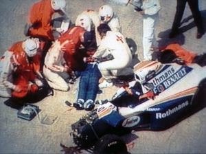
Morte
Ao participar da terceira corrida da temporada, o GP de San Marino, em Ímola, Senna rapidamente fez a terceira melhor volta da corrida, seguido por Michael Schumacher. Senna iniciara o que seria a sua última volta na F1; ele entrou na curva Tamburello (a mesma em que bateu Nelson Piquet com a Williams em 1987 e também onde bateu Berger com a Ferrari em 1989) e perdeu o controle do carro devido a uma barra de direção quebrada, seguindo reto e chocando-se violentamente contra o muro de concreto. A telemetria mostrou que Senna, ao notar o descontrole do carro, ainda conseguiu, nessa fração de segundo, reduzir a velocidade de cerca de 300 km/h (195 mph) para cerca de 200 km/h (135 mph). Os oficiais de pista chegaram à cena do acidente e, ao perceber a gravidade, só puderam esperar a equipe médica. Por um momento a cabeça de Senna se mexeu levemente, e o mundo, que assistia pela TV, imaginou que ele estivesse bem, mas esse movimento havia sido causado por um profundo dano cerebral. Senna foi removido de seu carro pelo Professor Sid Watkins, neurocirurgião de renome mundial pertencente aos quadros da Comissão Médica e de Segurança da Fórmula 1 e chefe da equipe médica da corrida, e recebeu os primeiros socorros ainda na pista, ao lado de seu carro destruído, antes de ser levado de helicóptero para o Hospital Maggiore de Bolonha onde, poucas horas depois, foi declarado morto.
Foi um GP trágico. Além do acidente de Rubens Barrichello e das mortes de Senna e Roland Ratzenberger, o acidente entre J.J. Lehto e Pedro Lamy fez arremessar dois pneus para a arquibancada, ferindo vários torcedores. O italiano Michele Alboreto, da Minardi, perdeu um pneu na saída dos boxes e se chocou contra os mecânicos da Ferrari, ferindo também um mecânico da Lotus. Logo após o acidente de Senna, durante alguns minutos as comunicações no circuito entraram em colapso permitindo que o piloto Érik Comas, da equipe Larrousse, deixasse o pit stop e retornasse à corrida quando ela já havia sido interrompida. O último piloto a se aproximar da Williams destruída com Senna foi justamente Erik Comas. Em entrevista ao UOL Esporte, o ex-piloto francês reverencia Senna pelo ato heroico em 1992, mas ainda se remói por não ter conseguido ajudar o amigo em estado gravíssimo após o acidente na curva Tamburello, em Ímola, em 1994.
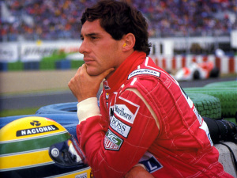A imagem de Ayrton apoiado na sua Williams, flagrado pelas TV's, com o olhar distante e perdido, pouco antes do início do GP, ficaria marcada para sempre entre seus fãs. No Brasil, ficou muito difundida uma frase dita pelo jornalista Roberto Cabrini ao Plantão da Globo, boletim de notícias extraordinário da Rede Globo. Logo após a confirmação da morte de Ayrton, pelo hospital, Cabrini noticiou dizendo, por telefone: "Morreu Ayrton Senna da Silva... Uma notícia que a gente nunca gostaria de dar." A temida curva Eau Rouge no circuito da Bélgica foi temporariamente readequada para a corrida de 1994.
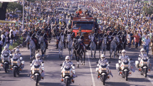A morte do piloto foi considerada pelos brasileiros como uma tragédia nacional e o governo brasileiro declarou três dias de luto oficial. O governo brasileiro também lhe concedeu honras de chefe de Estado, com a característica salva de tiros. Entre o cortejo do caixão com o corpo do piloto desde o Aeroporto de Guarulhos até a Assembleia Legislativa, o velório, que durou aproximadamente 24 horas, e o cortejo final desde a Assembleia até o Cemitério do Morumbi, aproximadamente dois milhões de pessoas estiveram presentes.
Na corrida seguinte a Ímola, em Mônaco, a FIA decidiu deixar vazias as duas primeiras posições no grid de largada, e elas foram pintadas com as cores das bandeiras brasileira e austríaca, em homenagem a Senna e Ratzenberger. O corpo de Senna foi sepultado no jazigo 11, quadra 15, setor 7, do Cemitério do Morumbi, em São Paulo, na quinta-feira, dia 5 de maio. Em 2014, aos 20 anos de seu acidente fatal, o presidente da Ferrari Luca di Montezemolo revelou que Senna queria encerrar sua carreira em sua equipe.
Ao longo dos anos a morte de Ayrton Senna foi alvo de algumas teorias conspiratórias, como de que a Williams pilotada por Senna teria sido sabotada a mando da FIA, ou que ele teria sido assassinado com um tiro ou sofrido um desmaio ou um infarto no momento em que morreu. Além dessas, outras teorias, como a que o piloto teria se suicidado ou até mesmo que ele sequer teria morrido, são as principais histórias criadas em torno do assunto.
Outras Atividades
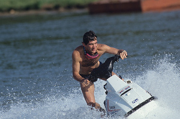Além das corridas de carros, Ayrton dedicava-se a tudo que apresentasse algum nível de velocidade, como por exemplo: jet-skis, motos, aeromodelos e principalmente helicópteros.
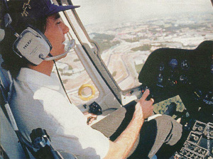Ayrton tinha o seu próprio helicóptero – um Esquilo – e acabou por tornar-se piloto privado, conseguindo o seu brevê em 1993. No dia 10 de outubro de 1993, Ayrton realizou o "check final" do brevê. Depois de uma hora e 40 minutos de voo, o coronel Fiúza – oficial da Força Aérea Brasileira – que ficou incumbido de "brevetar" Senna para helicópteros, ficou impressionado com a qualidade do novo "brevetado".
Ayrton teve três helicópteros "Esquilos", pilotando dois deles, o HYO e o HNY. No total, voou pouco mais de 100 horas, registradas na CIV (Caderneta de Informações de Voo). Sua última decolagem aconteceu no dia 3 de abril de 1994, partindo de sua fazenda em Tatuí – interior de São Paulo – para o Campo de Marte – zona norte da capital paulista.
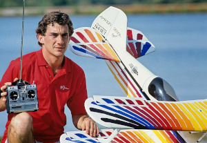
Aeromodelismo
Em sua fazenda em Tatuí, Ayrton cuidava de seus pequenos aviões, além de helicópteros. Construía e fazia a manutenção das máquinas, bem como praticava o esporte. Sua relação com o aeromodelismo começou quando Senna era criança e vivia no bairro de Santana, zona norte da capital paulista, mais precisamente no "Mirante de Santana". Ele pilotava um avião que não tinha controle de aceleração. Controlava o avião planando pelas ruas do bairro, no meio do trânsito, enquanto achava um lugar para descer.
Um dos principais parceiros do tricampeão na prática da modalidade era seu primo Fábio da Silva. Nas décadas de 1980 e 1990, eles realizavam disputas entre eles em máquinas que chegavam a 150 km/h. No final de 1991, em uma visita feita ao presidente Fernando Collor, Senna, junto com o deputado Wigberto Tartuce, praticou o esporte em Brasília, na L2 Sul, na maior pista de aeromodelismo da cidade.
Empresário
Apesar de a carreira de piloto estar em plena atividade, no início da década de 1990, Ayrton começou a se dedicar com mais afinco aos negócios e a administrar um patrimônio de centenas de milhões de dólares. Uma holding, a Ayrton Senna Promoções e Empreendimentos (Aspe), dirigida pelo pai Milton da Silva, o irmão Leonardo e o primo Fábio, controlava as empresas do grupo. A primeira e principal é a Ayrton Senna Licensing (ASL), criada para comercializar a imagem do piloto. A marca "Senna - Driven to Perfection", simbolizada por um "S" estilizado, foi criada em 1990 para administrar a concessão do uso da marca dos produtos associados ao piloto.
Em 1992, uma lancha, criada a seu gosto e que seria vendida em larga escala, sob o nome de "Senna 417 Sport Cruiser", estava à venda por 200 mil dólares. Motos e bicicletas também estavam no espectro dos negócios do piloto. O grupo italiano Cagiva/Ducati planejava para o segundo semestre de 1994 o lançamento de uma supermoto de 1000 cilindradas. Uma linha de bicicletas com a sua marca foi lançada, criada pela fábrica italiana Carraro. Em 1993, o piloto se associou à italiana DeLonghi em um negócio de importação de eletrodomésticos.
Criou a empresa Senna Import, que teve como primeiro grande contrato a importação e divulgação da marca Audi no Brasil. A assinatura aconteceu no final de 1993 na Alemanha. Poucos dias antes do acidente em Ímola, uma grande festa, no hangar da Varig no Aeroporto de Congonhas, foi feita para apresentar a marca ao mercado e público brasileiros. Era de sua propriedade uma concessionária da Ford, a Frei Caneca, em São Paulo.
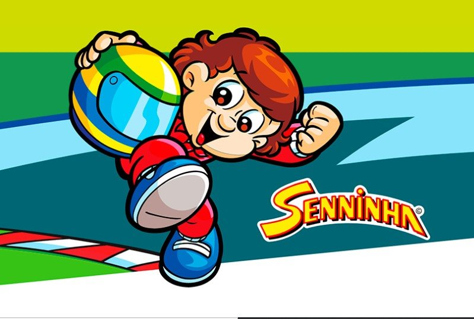Em fevereiro de 1994 o personagem Senninha foi apresentado à imprensa. A intenção era atingir o público infantil com os ideais do piloto, como a superação, dedicação e o gosto pela vitória. A primeira edição teve uma tiragem de 150 mil exemplares e foi lançada em março daquele ano.
Ayrton planejava criar uma espécie de Instituto ou Fundação para auxílio às crianças, além de, de alguma forma, melhorar a qualidade da educação dada ao público mais jovem. No começo de 1994, quando estava de férias, Ayrton procurou a irmã, Viviane Senna, para conversar sobre a ideia de fazer algo mais estruturado, de ajudar de forma mais eficaz. O projeto foi criado e lançado no final de 1994 pela sua irmã com o nome de Instituto Ayrton Senna. O seu escritório no Brasil ficava no bairro de Santana, na Zona Norte da capital paulista, conhecido como "Centro Empresarial Vari". Um prédio luxuoso e com um visual moderno para a época de sua construção, o edifício conta com um heliponto, elevador panorâmico, além de ser todo espelhado. Senna ajudou a construí-lo no início da década de 1990, sendo que parte do edifício - sete andares - eram de sua propriedade.
Filantropia
Em vida, Ayrton ajudou inúmeras vezes programas de assistência a carentes, principalmente os ligados a crianças. A única condição para isso era o total sigilo. Se a imprensa descobrisse, ele negaria. Até mesmo a família e amigos mais próximos não tinham conhecimento da maioria de suas doações. Ayrton não desejava que seus gestos fossem interpretados apenas como promoção pessoal.
Senna demonstrava publicamente preocupação com a pobreza generalizada no Brasil, especialmente em relação aos mais jovens. Em março de 1994 doou 45 mil dólares para um programa de assistência a crianças, filhos de seringueiros do Acre – "Saúde sem limites" – gerido pelo seu amigo professor Sid Watkins. Ele doava largas somas para a creche do "Espaço Santa Terezinha", direcionada às crianças pobres, gerenciada por Maria José Magalhães Pinto. Julian Jakobi, empresário de Ayrton, confirmou que o piloto costumava ligar de algum lugar do planeta para pedir que ele fizesse doações a instituições ou pessoas. Certa vez, no início da década de 1990, durante os conflitos na Bósnia, Senna ajudou crianças vitimas da guerra. Em certa ocasião, Ayrton visitou uma entidade de assistência a crianças portadoras de graves deficiências. Um caso em específico chocou o tricampeão, três irmãos portadores de graves deformações fizeram com que ele passasse mal durante a visita.
Pouco antes de sua morte, ele criou a estrutura de uma organização dedicada às crianças pobres brasileiras, que mais tarde se tornou o Instituto Ayrton Senna. Após sua morte, foi descoberto que ele havia doado em segredo uma porção muito grande de sua fortuna pessoal (estimada em cerca de US$ 400 milhões) para ajudar crianças pobres.
Patrocínios
Em 1982 Ayrton conseguiu seus primeiros patrocinadores de peso. A primeira parceria se deu com a Riachuelo por meio da marca Jeans Pool, lançada e comandada na época por Flávio Rocha. Segundo Flávio, a quantia designada a patrocinar a jovem promessa girava em torno de 100 mil dólares. A marca continuou com o piloto até 1984. No mesmo ano foi a vez do Banerj, comandado na época por Israel Klabin. A parceria durou até o final da temporada de 1983, quando já era comandado por Marcello Alencar.
No seu período de Lotus, entre 1985 e 1987, Ayrton manteve um contrato de patrocínio com os cigarros "John Player Special", que eram fabricados no Brasil pela Souza Cruz. A marca inglesa de cigarros igualmente patrocinava a equipe britânica. Em 1986, segundo o gerente de lançamentos de produtos da Souza Cruz, o inglês Peter Robertson, Ayrton já era a figura mais popular do Brasil. Tanto que foi montado o "Projeto Ayrton Senna", que consistia na veiculação de comerciais no rádio e TV sob o título "Pisa Fundo Ayrton", além de publicidade nas principais revistas do país.
Mantinha um contrato de patrocínio com o Banco Nacional, que nos últimos anos de vida lhe rendia cerca de 7 milhões de dólares anuais. O boné azul do Banco, usado pelo piloto em suas entrevistas coletivas e outros eventos, ficou bastante associado à imagem do brasileiro. O artefato é vendido pela loja virtual da marca Ayrton Senna. Um dos pilares em que o Banco Nacional se apoiou para se tornar um dos principais bancos nacionais entre o final da década de 80 e início da década seguinte, foi a sua associação com a imagem de Senna. Ayrton se transformou em garoto propaganda da instituição financeira em 1984 e a partir de então ajudou a tornar a marca do banco conhecida em todo o Brasil. O Nacional criou algumas campanhas relacionadas ao tricampeão, como por exemplo a Torcida Nacional, que dava prêmios com a marca do piloto para quem fizesse uma aplicação ou adquirisse um produto do banco.
Vida Pessoal
Ayrton Senna era devoto do catolicismo e costumava ler a Bíblia durante os voos que fazia entre São Paulo e Europa. Em Senna, documentário sobre sua carreira de piloto (lançado em 2010), Viviane Senna (irmã de Ayrton) revelou que pouco antes de sua morte ele abriu a Bíblia em uma página: "Naquela manhã quando ele acordou, pediu a Deus para falar com ele. Abriu a Bíblia e leu um texto que falava que Deus ia dar para ele o maior presente de todos os presentes. Que era Ele mesmo".
Em relação à política, Ayrton Senna nunca gostou de dar declarações a respeito, evitando revelar votos em eleições, elencar candidatos de sua estima e opinar sobre questões ideológicas específicas. Porém, em 1986, Ayrton apoiou o empresário Antonio Ermírio de Moraes ao governo do estado de São Paulo.
No futebol, Ayrton Senna se declarava torcedor do Corinthians, fato muito celebrado pela torcida do clube por sua própria condição de ídolo nacional. Em 1988, logo após o primeiro título mundial, Ayrton tornou-se sócio do clube português Os Belenenses. A adesão do piloto se deu através de uma ação de marketing do então presidente, Miguel Pardal.
Além de Nelson Piquet, o francês Alain Prost, que foi companheiro de Senna por duas temporadas na McLaren-Honda, fez uma das rivalidades mais acirradas da história da F-1. Desde o final do campeonato de 1988, havia tensão no relacionamento entre ambos, com o francês acusando a McLaren de dar tratamento preferencial a Senna. A relação se deteriorou durante a temporada de 1989, quando ambos já não se falavam. A colisão dos pilotos durante o GP do Japão daquele ano selou o auge da inimizade. Na temporada de 1990, Prost trocou a equipe pela Ferrari, e Senna daria o troco no rival, em mais um campeonato decidido em uma batida - desta vez favorável ao brasileiro. Mas a relação entre os dois pilotos melhorou após a aposentadoria do francês, e Senna e Prost se aproximaram em 1994. Antes do anúncio da morte de Ayrton Senna, Prost imediatamente havia se solidarizado após o acidente. O francês participou do funeral do piloto. "O Ayrton e eu tínhamos uma ligação. A sua morte foi o final da minha história com a Fórmula 1. Ninguém pode falar do Ayrton sem falar de mim e ninguém pode falar de mim sem falar dele", declarou Prost. O piloto francês chegou a fazer parte do conselho consultivo do Instituto Ayrton Senna.
Ayrton não teve filhos, até sua morte teve três sobrinhos, o piloto Bruno Senna, Bianca Senna e Paula Senna - filhos de Viviane Senna. Sobre Bruno, Ayrton declarou em 1993: "Se vocês acham que eu sou rápido, esperem para ver meu sobrinho Bruno."
Relacionamentos
Na vida afetiva, Ayrton Senna – sempre muito focado em sua carreira – teve cinco namoros sérios: Lílian de Vasconcellos Souza, Adriane Yamin, Xuxa Meneghel, Cristine Ferracciu e Adriane Galisteu.
Casou-se oficialmente com Lílian em fevereiro de 1981. Após o casamento, Lílian passou a assinar Lílian Senna da Silva. Passaram a lua de mel em Chicago, na casa de Fábio Machado, o primo de Senna, e chegaram a viver juntos em uma casa em Londres, na época em que o piloto competia pela Fórmula Ford 1600. A união durou apenas oito meses.
Após o divórcio com Lílian, Senna assumiu seu caso com Adriane Yamin, à época uma adolescente de quinze anos, herdeira da empresa Duchas Corona. O relacionamento foi bastante comentado, pelo fato de a menina ser menor de idade e bem mais jovem que o piloto, que foi o primeiro namorado dela. O relacionamento durou até o final de 1988. Entre 1990 e 1991, Senna teve um relacionamento com a carioca Cristine Ferracciu.
A falta de apego de Senna a suas namoradas rendeu fofocas de que ele tinha pouco interesse pelo sexo oposto. Em 1988, Nelson Piquet, em entrevista ao Jornal do Brasil, sugeriu que Senna não gostava do sexo oposto ao pedir que a imprensa perguntasse a Senna por que é que ele não gostava de mulher. A revista italiana Panorama (a de maior circulação do país) dedicou reportagem às dúvidas levantadas por Piquet e a questão foi parar na Justiça. Piquet preferiu se retratar, mas o estrago estava feito. Senna passou a conviver com os boatos e se tornou desafeto de Piquet. Em agosto de 1990, em uma entrevista para a revista Playboy, Senna afirmou que Piquet não poderia ter feito a insinuação, sugerindo que tinha tido um caso com Catherine Valentim, então mulher do rival.
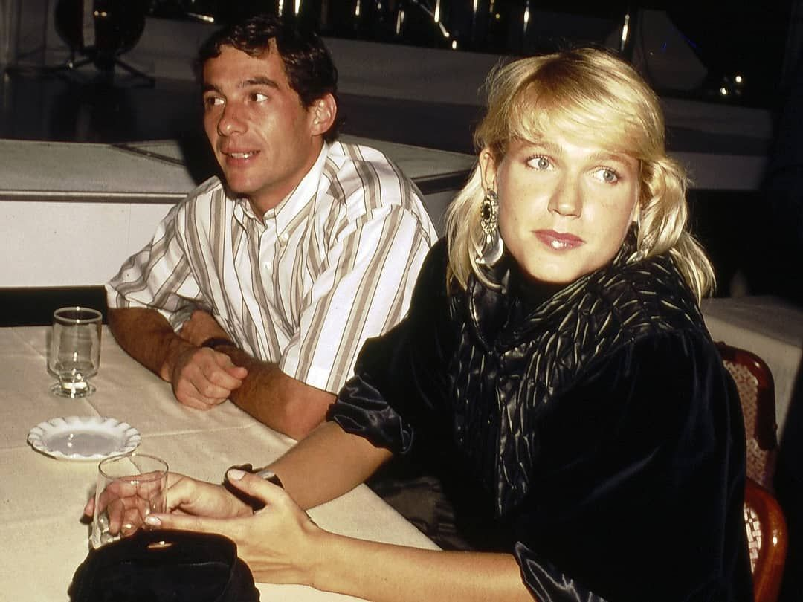 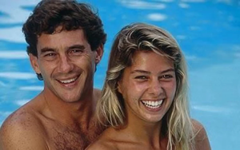Após a separação com Adriane Yamin, Senna teve um relacionamento com Xuxa que durou do final de dezembro de 1988 a 1990 e rápidos casos com diversas mulheres, especialmente modelos, como Patrícia Machado, Vanusa Spindler e Marcella Praddo, que engravidou, mas Senna disse que não assumiria o bebê, por desconfiar da paternidade. A jovem entrou na justiça para provar a paternidade da filha, Vitória, mas comprovou-se, através de exame DNA, que Senna não era o pai da criança.
Ayrton iniciou um namoro com Adriane Galisteu após o GP do Brasil de 1993, em festa em uma danceteria de São Paulo. O relacionamento durou 13 meses, até a morte do piloto.
Legado e Homenagens
A reforma do autódromo de Interlagos em 1990, que teve uma mudança radical no traçado, foi proposta para seguir as regras de limites de distância de um circuito da FIA, e uma grande curva inclinada foi sugerida para ligar a reta dos boxes à curva do sol. Ayrton propôs um "S" que ligasse as duas retas, daí o nome de "S do Senna", pelo design do tricampeão, e não somente uma homenagem a ele. Com a morte de Ayrton Senna, novas normas de segurança foram implementadas para a F1. Novas barreiras, curvas redesenhadas, altas medidas de segurança e o próprio cockpit dos pilotos foram as mudanças feitas na F1, ligadas diretamente à sua morte.
Ayrton Senna contribuiu para o desenvolvimento do projeto base do protótipo Honda NSX, lançado em 1990, em sua fase de testes. Isso se deu durante o acordo feito entre a montadora Honda, que se mantinha como fornecedora de motores para equipe McLaren. Ayrton contribuiu realizando vários testes de desempenho e controle durante longas sessões no Circuito de Suzuka.
Sua influência na sociedade brasileira fez com que houvesse um crescimento de crianças batizadas com o nome "Ayrton" na década de 1990 em relação à década de 1980, de 269%. O nome "Airton" também obteve um crescimento na mesma década.
Em 1994, o cantor Elymar Santos gravou uma música chamada "Guerreiros não morrem jamais" em homenagem ao piloto. Em dezembro de 2009 a revista inglesa Autosport publicou uma matéria onde fez uma eleição para a escolha do melhor piloto de Fórmula 1 de todos os tempos. A revista consultou 217 pilotos que passaram pela categoria e Ayrton Senna venceu a votação.
A rede de comunicação estatal britânica BBC elegeu o brasileiro Ayrton Senna como o melhor piloto de Fórmula 1 da história. "Provavelmente nenhum piloto da Fórmula 1 tenha se dedicado mais ao esporte e dado mais de si mesmo em sua rígida busca pelo sucesso. Ele era uma força da natureza, uma combinação incrível de muito talento e, em alguns casos, uma determinação espantosa", aponta o texto publicado no site da BBC. Em 2012, o SBT realizou o programa O Maior Brasileiro de Todos os Tempos para eleger a maior personalidade do país. Ayrton Senna ficou entre os seis mais votados, primeiro entre os esportistas.
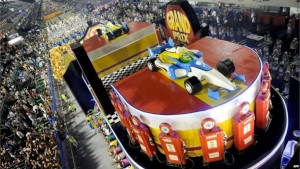Em 2014, ano em que se completaram duas décadas de sua morte, a escola de samba do Rio de Janeiro Unidos da Tijuca levou o tricampeão mundial de Fórmula 1 de volta às pistas, como tema do enredo "Acelera, Tijuca!". Além de reverenciar Senna, o carnavalesco Paulo Barros mostrou o universo da velocidade e do automobilismo. Fã de Ayrton, o presidente da agremiação, Fernando Horta, revelou que a família de Senna abraçou a ideia e estaria diretamente envolvida na pesquisa e no desenvolvimento do enredo. A escola sagrou-se campeã do carnaval carioca de 2014.
No mesmo ano, Ayrton Senna foi o primeiro piloto de Fórmula 1 a ser homenageado pela gigante das buscas, a empresa Google. O 54º aniversário do tricampeão mundial recebeu celebração também através do Google Doodle. Ainda em 2014, o programa Esporte Espetacular, da Rede Globo, exibiu a série "Ayrton Senna do Brasil", que relembrou os detalhes da vida do tricampeão mundial de F1 morto em 1994. Esse é o resultado de uma parceria entre a TV Globo e a produtora Bizum para relembrar aos brasileiros um herói nacional das manhãs de domingo. A série foi exibida em quatro episódios.
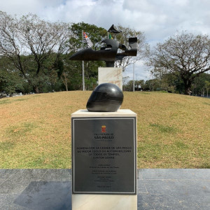Pesquisas apontam o piloto como o maior ídolo do esporte no Brasil, ganhando inclusive a alcunha de herói nacional por parte da mídia especializada. Também em sua homenagem há a Praça Ayrton Senna, no Centro Esportivo Modelódromo, próximo ao Parque do Ibirapuera, no bairro do Paraíso, em um espaço de aproximadamente 15 mil m², inaugurada em 1º de maio de 2017. No local, o Monumento a Ayrton Senna está em um ponto elevado e cercado pelas bandeiras do Brasil, do estado e da cidade de São Paulo. A escultura foi totalmente restaurada pela iniciativa privada e recebeu uma réplica da bandeira que a compunha - já que a original foi roubada em 2004. Além da já mencionada obra, a praça conta com uma réplica do capacete do piloto feita igualmente em bronze fundido, mesmo material da escultura. As peças contarão com iluminação especial.
Em 2014, um estudo feito pela empresa de análise de crédito ProScore, apontou Senna como a segunda personalidade paulista que mais dá nome a logradouros, atrás somente do escritor Monteiro Lobato e à frente de nomes como do bandeirante Fernão Dias, o padre jesuíta José de Anchieta e o também bandeirante Raposo Tavares.
Em maio de 2017, o governo do Principado de Mônaco, através do seu príncipe Albert II, prestou uma série de homenagens a Ayrton Senna na semana do Grande Prêmio de Mônaco de Fórmula 1. A primeira delas foi a inauguração de uma escultura com duas placas na curva Fairmont, onde fica o hotel de mesmo nome, que igualmente recebeu uma homenagem ao tricampeão mundial; uma suíte temática batizada com o nome do piloto. Seguiram-se uma exposição com itens especiais usados pelo piloto durante a carreira no Yatch Club de Mônaco e no Paddock Club. O pintor Armin Flossdorf também homenageou o brasileiro fazendo seis pinturas ao vivo, uma para cada vitória do brasileiro em Mônaco. Também foi exibida para a imprensa internacional a nova coleção especial com roupas, acessórios e itens colecionáveis da Ayrton Senna Shop, bem como a primeira versão de uma moeda de euro comemorativa com o rosto de Ayrton Senna. Uma outra homenagem especial aconteceu nos telões espalhados pelo circuito de Monte Carlo com um vídeo sobre Senna.
No dia 10 de novembro de 2017, estreou no Rio de Janeiro, no Teatro Riachuelo, Ayrton Senna, O Musical, que contava com Hugo Bonemer no papel do piloto. A obra teatral não era uma biografia sobre Senna, mas uma homenagem ao tricampeão da Fórmula 1. Em São Paulo, estreou em 16 de março de 2018 no Teatro Sérgio Cardoso.
A McLaren Automotive anunciou em 9 de dezembro de 2017, na Inglaterra, um supercarro esportivo chamado McLaren Senna. Segundo a empresa, é o McLaren mais rápido já feito em sua história. Seriam produzidas 500 unidades, ao preço de aproximadamente 750 mil libras esterlinas. O supercarro esportivo foi divulgado ao público em 6 de março de 2018 no Salão Internacional do Automóvel de Genebra.
Em 1º de maio de 2019 foi realizado o "Senna Day Festival", evento em homenagem aos 25 anos do legado do piloto, que recebeu cerca de 15 mil pessoas no Autódromo de Interlagos. O festival contou com atrações musicais, atividades esportivas, exposições, corridas, caminhada, atividades infantis e automobilismo. No mesmo dia aconteceu o "Ayrton Day", evento realizado no Autódromo Enzo e Dino Ferrari em Ímola, Itália. No mesmo autódromo ficou em exibição a exposição Ayrton Mágico, dentro do museu Checco Costa.
Em 2020, Senna foi considerado o piloto mais rápido das últimas quatro décadas, segundo estudo encomendado pela categoria à Amazon Web Services (AWS). A AWS utilizou em seu estudo tecnologia de aprendizado de máquina para analisar os dados de todos os pilotos de 1983 até 2020. O desempenho dos pilotos foi aferido pelos seus tempos de qualificação, que foram comparados com o desempenho de seus companheiros de equipe. Segundo os pesquisadores, os treinos, mais que as corridas em si, fornecem tempos mais legítimos para a discussão sobre quem é o mais rápido da história. Foram analisados 142 pilotos, com Senna em primeiro lugar, a frente de Michael Schumacher em 0s114. O estudo enfrentou muitas críticas e foi classificado pela imprensa como "polêmico" e "controverso", já que aparecem nas primeiras posições pilotos novos e sem títulos à frente de campeões como Sebastian Vettel, Alain Prost e Nelson Piquet. Apesar da controvérsia, muitos apontaram que a posição de Senna como o mais rápido oferece pouca polêmica, bem como a lista dos três primeiros (Senna-Schumacher-Hamilton).
Marca Senna
A marca "Senna" já deu nome a diversos produtos, desde relógios, passando por motos e carros esportivos. A marca foi criada em 1990, desenvolvida pela designer Renata Curcio. Tem o "S" estilizado como símbolo. É ligada à imagem da pessoa Ayrton Senna, com produtos mais luxuosos.
Segundo uma reportagem do Jornal do Brasil de 2 de maio de 1993, a marca "Senna" atingia seu ápice até então, naquele ano, devido às vitórias do piloto naquela temporada mesmo com um equipamento inferior. Também associava o número de crianças que competiam em diversas categorias de base do automobilismo, por volta de 13 mil à época, ao sucesso do tricampeão. Vários produtos foram comercializados, sendo um dos destaques o boné do Banco Nacional, que segundo estimativas feitas na época, contava com mais de 1 milhão distribuídos pelo país. Senna inspirava crianças e adultos e já era considerado um herói nacional. Segundo o jornal, o Brasil vivia uma Sennamania.
Uma série de quatro relógios intitulada Senna Collection, produzidos pela Tag Heuer sob a marca Avant-Garde, foi lançada em 2015. A moto Panigale S Senna foi criada especialmente para comemorar os 20 anos de legado do piloto em 2014. Fabricada pela Ducati, custou R$ 100 mil e teve apenas 161 unidades, número que fez referência ao total de corridas disputadas pelo piloto na Fórmula 1. Um supercarro esportivo chamado McLaren Senna lançado em 6 de março de 2018 no Salão Internacional do Automóvel de Genebra no valor de 750 mil libras esterlinas, com apenas 500 unidades produzidas. Também foi desenvolvida uma versão apenas para as pistas de corridas e com 75 unidades disponíveis, no valor de um milhão de libras esterlinas, denominada McLaren Senna GTR.
Em 2014, um estudo feito por Erich Beting, sócio-diretor da agência de notícias Máquina do Esporte, especializada em marketing esportivo, mostrou que a marca ligada ao piloto movimentou entre 600 milhões a 1 bilhão de reais em 2013.
Um estudo feito pelo Boston Consulting Group em 2015 mostrou que a marca, em termos de produtos licenciados, tem o mesmo potencial de atletas em atividade, como o tenista Roger Federer, e de alguns dos principais nomes de esportes mais populares que o automobilismo, como o basquete, neste caso, o ex-jogador Michael Jordan.
Em dezembro de 2017, uma parceira do Instituto Ayrton Senna com a agência de branding FutureBrand São Paulo reposicionou a marca com a atualização do logo, agora mais contemporâneo. Agora o logo conta com curvas dinâmicas, contraste de materiais e uso de tons mais escuros que definem uma nova identidade à marca, enquanto toques de vermelho adicionam energia e dinamismo ao visual de cada item. O novo conceito foi lançado durante a apresentação do "McLaren Senna".
No mês de agosto de 2018, uma iniciativa do "Grupo GS& Gouvêa de Souza", em parceria com o instituto que leva o nome do tricampeão, criou a primeira loja 100% operada no conceito omnichannel. Sob o título de "Omnistory Ayrton Senna", consiste em uma plataforma que converge os mundos físico e digital em uma experiência de compra completamente integrada e inédita no país.
Fã-clubes
O primeiro fã-clube criado em homenagem ao piloto foi a Torcida Ayrton Senna, também conhecida como TAS. Foi criada por Jurandir Amaral em 15 de maio de 1988 na cidade de Brasília. No seu auge a torcida alcançou a marca de 18 mil associados em todo o Brasil - número bem próximo de uma torcida organizada de futebol à época. Filiais foram abertas em outras capitais brasileiras como Rio de Janeiro, Belo Horizonte, Fortaleza, João Pessoa e Porto Velho. Em São Paulo a TAS foi criada pelo advogado Adilson Carvalho de Almeida também em 1988. Porém em julho de 2014, a família Senna pediu o imóvel de volta, fazendo com que a torcida encerrasse suas atividades de forma temporária.
Atualmente existem diversos fã-clubes do piloto espalhados pelo mundo, desde a Alemanha até países como Japão e Austrália. No entanto, nos dias atuais, os tradicionais clubes de fãs raramente contam com sede física, assim como reuniões na respectiva sede ou em algum lugar pré-marcado para encontros igualmente tornaram-se raros. Os admiradores se comunicam e trocam impressões de forma online, via redes sociais.
Estilo de Pilotagem
Senna tinha um estilo de pilotagem conhecido como "agressivo": Ele freava muito pouco na entrada das curvas; utilizando o freio motor para fazer reduções fortíssimas. Além disso, ele tangenciava mais tarde nas curvas, esterçando bastante o volante, e carregando mais velocidade à curva.
Ayrton Senna era um excelente acertador de carros. Numa época em que a telemetria ou não existia, ou engatinhava, os engenheiros que trabalhavam com Ayrton afirmam que ele passava horas conversando com eles em busca das melhores soluções, que sempre funcionavam e os ganhos eram sentidos na pista. Não por menos, ele foi um dos poucos pilotos - se não o único - a testar pessoalmente o desenvolvimento tecnológico dos sistemas de freios.
Na época em que Senna conduzia, os carros da F-1 possuíam câmbios manuais e três pedais. Com isso, Senna fazia como ninguém o uso de uma técnica de frenagem conhecida como "punta-taco", cujo objetivo era manter a rotação do motor mais alta nas reduções e evitar os "trancos".
Além disso, Senna foi um dos primeiros a entender a importância da preparação física para os pilotos. Conforme dito por Gerhard Berger em seu livro, Senna "havia atingido um nível inteiramente novo em preparação física no mundo do automobilismo. Para conseguir fazer o melhor, é necessário treinar tão duro quanto qualquer atleta profissional. E Senna foi o primeiro a fazer isso".
Rei da Chuva
No início da carreira, Ayrton não era um exímio piloto em condições de chuva. Em uma corrida de kart, ele fez uma péssima prova no molhado. Depois desse dia, Ayrton passou a treinar freneticamente quando chovia em São Paulo. Quando as primeiras gotas de chuva começavam a cair, Ayrton preparava o seu equipamento e partia rumo ao Kartódromo de Interlagos.
Exemplos de grandes corridas de Ayrton nestas condições são: GP de Mônaco de 1984, GP de Portugal em 1985, GP da Bélgica 1985, GP da Inglaterra 1988, GP da Alemanha 1988, GP do Japão 1988, GP da Bélgica 1989, GP do Canadá 1990, GP do Brasil 1991, GP de San Marino 1991, GP da Austrália 1991, GP do Brasil 1993, GP da Europa 1993 e GP do Japão 1993.
Controvérsias
Em 1989, Senna concedeu uma entrevista ao programa Jô Soares Onze e Meia no SBT. Senna foi questionado pelo apresentador sobre a compra de uma mansão em Miami e se já estaria rico. Senna respondeu: "Comprei a casa em várias parcelas. Rico mesmo é o filho do governador do Maranhão, que comprou uma mansão ao lado, maior que a minha, à vista e em dinheiro vivo". Senna estava se referindo a Edinho Lobão, filho do então governador do Maranhão Edison Lobão, que nunca desmentiu a história. Na época, Edinho ganhou o apelido de "Edinho 30", por causa dos percentuais que supostamente levava "por fora" em negócios feitos com o governo do estado.
Em abril de 1993, logo após uma sessão de cinema, no "Liberts" na Avenida Paulista, o repórter Otávio Cabral do Notícias Populares teria sido agredido por Senna. Ayrton tentou de início argumentar com os repórteres presentes no local, para que não tirassem fotos ou fizessem uma bateria de perguntas, afinal ele estava em um momento de lazer. Porém, o momento que desencadeou a fúria de Ayrton foi quando o já citado repórter perguntou; "Essa história da gravidez da Marcella Praddo. Afinal, a filha é sua ou não é?". Na sequência, Ayrton teria dado um tapa na orelha do repórter, arrancado-lhe a máquina fotográfica e a arremessado contra o vidro do cinema.
Obras Escritas Por Senna
Ayrton Senna escreveu um livro em 1991 sobre as técnicas de pilotagem de um carro de corrida. A obra foi publicada na Itália e posteriormente lançada em outras línguas, como o inglês e português.
- "Guidare in Pista", Editora La Mille Miglia Editrice (1991).
- "Ayrton Senna's Principles of Race Driving", Editora Hazleton Pub (1993).
- "A Arte de Pilotar", Editora Globo (1993).